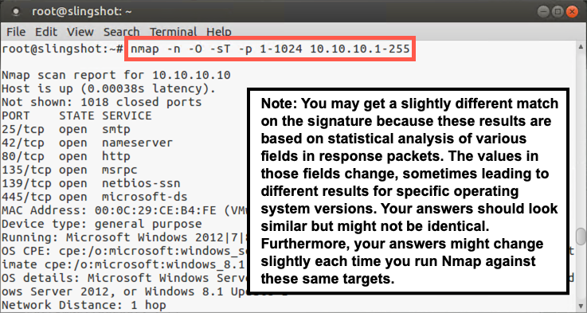
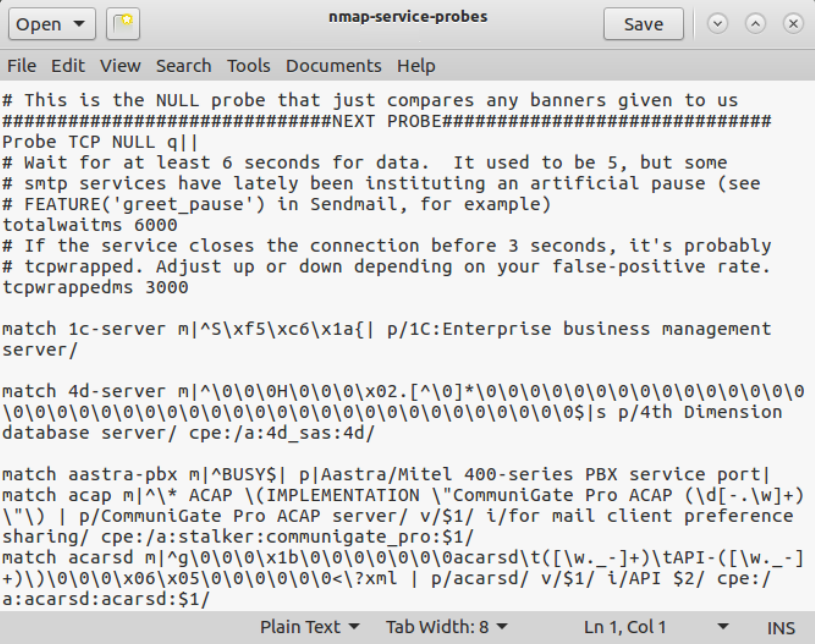

Lab 2.2: Nmap -O -sV
Objectives
- To use Nmap to perform operating system fingerprinting of target machines
- To use Nmap's version scanning feature to determine the specific software versions and protocol versions targets are using
Table of Contents
Lab Setup
Again, for this lab, make sure your Slingshot Linux image is connected to the 560 target network environment by pinging 10.10.10.10.
$ ping 10.10.10.10
Root Access
You will need root access for the majority of the lab. This is a reminder to be aware of the prompts. If you see a prompt containing #, it means the command is run as root. To become root, type the following command.
sec560@slingshot:~$ sudo su - root@slingshot:~#
Lab – Step-by-Step Instructions
1. Initial Scan
For this lab, we are going to start by running Nmap's OS fingerprinting features. Start up tcpdump so that it will sniff all packets from your machine and the 10.10.10.0/24 network without resolving names, as follows:
# tcpdump -nn host YOUR_LINUX_IP_ADDRESS and net 10.10.10
Open a NEW TERIMANAL WINDOW for the Nmap commands.
Now invoke Nmap to do the following:
- Not resolve names. (Have it display IP addresses instead.)
- Use OS fingerprinting.
- Perform a TCP connect scan (the three-way handshake for each open port).
- Scan target ports 1 through 1024.
- Scan the target network 10.10.10.1-255.
Try to compose this Nmap command line yourself. Then look below to see the recommended Nmap command to verify your planned usage.
While Nmap is running, periodically check on its progress by looking at your sniffer output. Also, press the spacebar every once in a while to see what Nmap is up to.
To make Nmap perform the scan described above, we invoke it as follows.
# nmap -n -O -sT -p 1-1024 10.10.10.1-255
The -n option makes Nmap use IP address numbers instead of names. The -O (that's a letter O, not a zero) tells Nmap to perform OS fingerprinting, which uses the second-generation capability. The -sT configures Nmap to do a TCP scan, completing the three-way handshake (a connect scan). We've directed it to scan ports 1 to 1024 with the -p 1-1024 syntax. And of course, our targets all fall within 10.10.10.1-255. The IP range could also be specified as 10.10.10.0/24.

Note the results in Nmap's output. Did it identify the operating system types of 10.10.10.5, 10.10.10.10, 10.10.10.20, 10.10.10.50, and 10.10.10.60?
Note that you may get a slightly different match on the signature from what you see on this slide because these results are based on a statistical analysis of various fields in response packets, which vary from time to time even on the same target machine. The values in those fields change, sometimes leading to different results for specific operating system versions. Your answers should look similar but might not be identical. In fact, your answers might change slightly each time you run Nmap against these same targets due to this field sampling and analysis performed by Nmap!
2. The nmap-service-probes File
For version scanning, Nmap bases its analysis of services on the contents of a file called nmap-service-probes, located in the Nmap directory. In that file, lines that start with "Probe" indicate the messages to send to target services, whereas lines that start with "match" indicate the response text to look for when identifying the given service.
Open the file to look at its probe and match lines:
# gedit /usr/local/share/nmap/nmap-service-probes

Close the file, and we'll now use Nmap for version scanning.
3. Version Scan of 10.10.10.10
Next, we'll do an Nmap version scan, but only of ports between 1 and 150 and with one target host at a time. Start with 10.10.10.10.
Your Nmap command should look like this:
# nmap -n -sV -p 1-150 10.10.10.10
The output should be similar to this:
# nmap -n -sV -p 1-150 10.10.10.10 Starting Nmap 7.70 ( https://nmap.org ) Nmap scan report for 10.10.10.10 Host is up (0.00035s latency). Not shown: 145 closed ports PORT STATE SERVICE VERSION 25/tcp open smtp Microsoft ESMTP 8.5.9600.16384 42/tcp open tcpwrapped 80/tcp open http Microsoft IIS httpd 8.5 135/tcp open msrpc Microsoft Windows RPC 139/tcp open netbios-ssn Microsoft Windows netbios-ssn MAC Address: 00:0C:29:CE:B4:FE (VMware) Service Info: Host: trinity.sec560.local; OS: Windows; CPE: cpe:/o:microsoft:windows Service detection performed. Please report any incorrect results at https://nmap.org/submit/ . Nmap done: 1 IP address (1 host up) scanned in 14.30 seconds
Compare your results to those discovered when you performed the -sT port scan above against 10.10.10.10. Are they different? How? You should now see a VERSION column with more detailed information in it than you did in the -sT port scan result.
Let's run Nmap, focusing on port 25 on 10.10.10.10. We'll run it once with -sV and once without. Compare the output of the following two commands:
# nmap -n -p 25 10.10.10.10 | grep 25/tcp # nmap -n -p 25 -sV 10.10.10.10 | grep 25/tcp
The output should look similar to this:
# nmap -n -p 25 10.10.10.10 | grep 25/tcp 25/tcp open smtp # nmap -n -p 25 -sV 10.10.10.10 | grep 25/tcp 25/tcp open smtp Microsoft ESMTP 8.5.9600.16384
Notice the difference in the detection for this specific port. Without the -sV option, Nmap uses the name in the nmap-services file. With the -sV, Nmap will probe the service and determine the service information (when possible).
4. Version Scan of 10.10.10.20
Next, proceed to do the same kind of scan against 10.10.10.20.
# nmap -n -sV -p 1-150 10.10.10.20
Your result should be similar to the following:
Both 10.10.10.10 and 10.10.10.20 are Windows machines, but they have significant differences in configuration, especially with respect to port filtering.
In your output for 10.10.10.20, note that TCP ports 135 and 139 are labeled as "filtered".
# nmap -n -sV -p 1-150 10.10.10.20 Starting Nmap 7.70 ( https://nmap.org ) Nmap scan report for 10.10.10.20 Host is up (0.00047s latency). Not shown: 147 closed ports PORT STATE SERVICE VERSION 80/tcp open http Microsoft IIS httpd 8.5 135/tcp filtered msrpc 139/tcp filtered netbios-ssn MAC Address: 00:0C:29:1B:1D:15 (VMware) Service Info: OS: Windows; CPE: cpe:/o:microsoft:windows Service detection performed. Please report any incorrect results at https://nmap.org/submit/ . Nmap done: 1 IP address (1 host up) scanned in 14.92 seconds
If you look at a packet capture of the traffic to ports 135 and 139, you'll see that the server never sends a response (including a RESET) for these ports, that's why they show up as filtered.
Conclusion
In this lab, we've seen how Nmap OS fingerprinting and version scanning can gather information about operating system types and the versions of software running on target machines. This information is tremendously useful to a penetration tester in focusing an attack and using specific tools and exploits to gain access to a target environment.